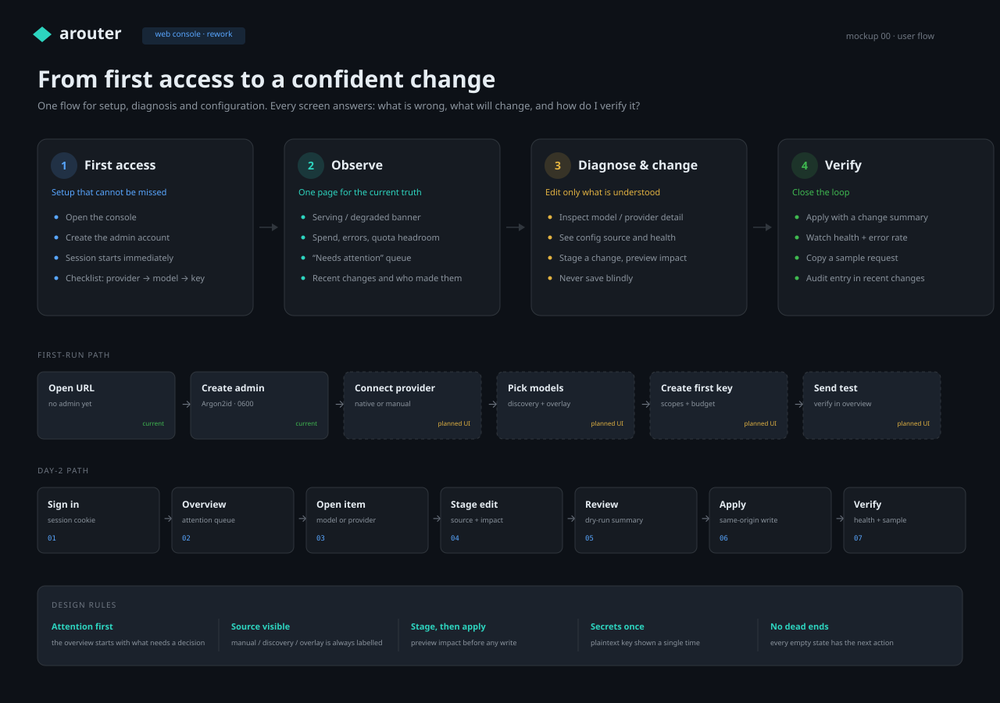
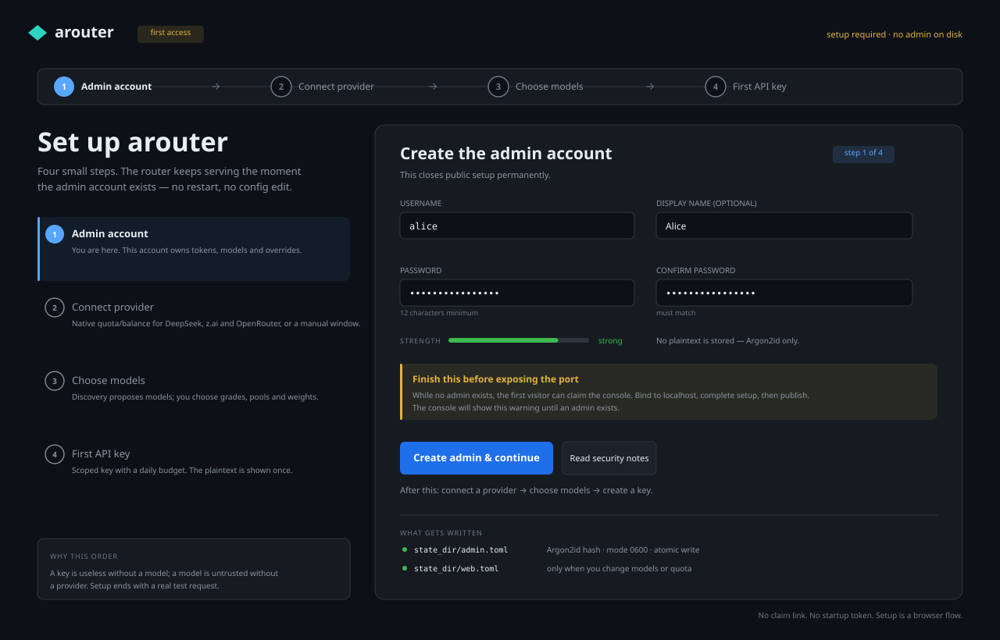
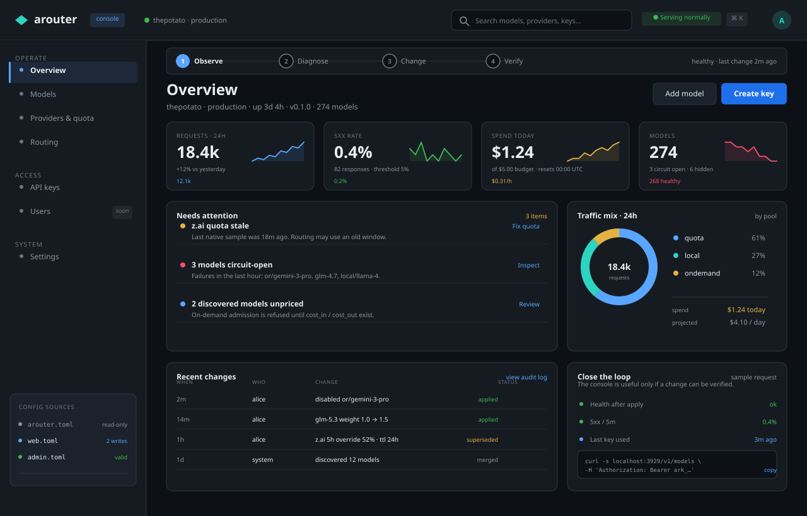
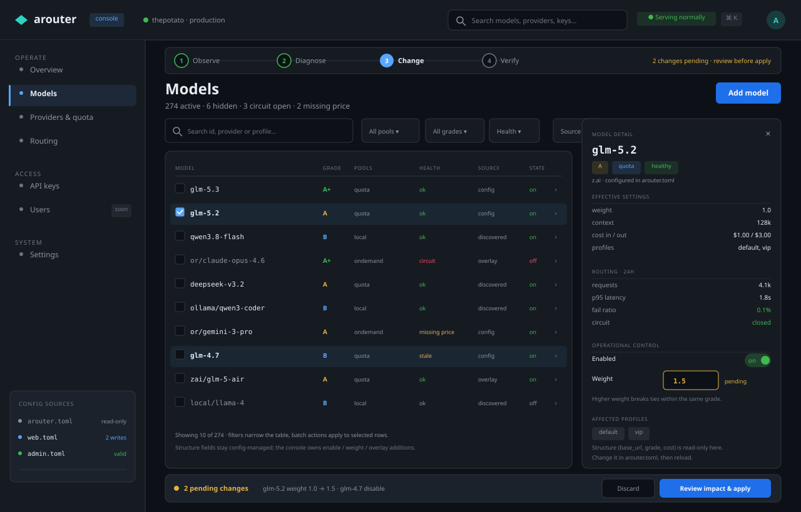
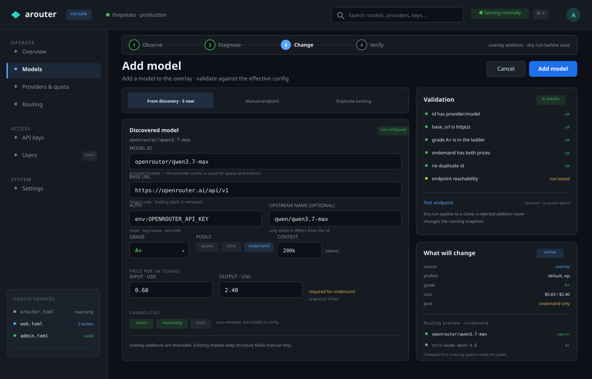
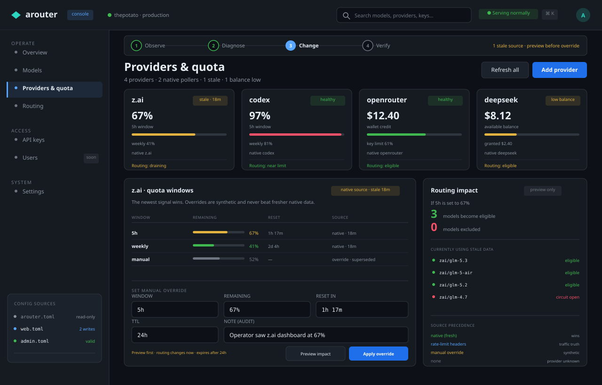
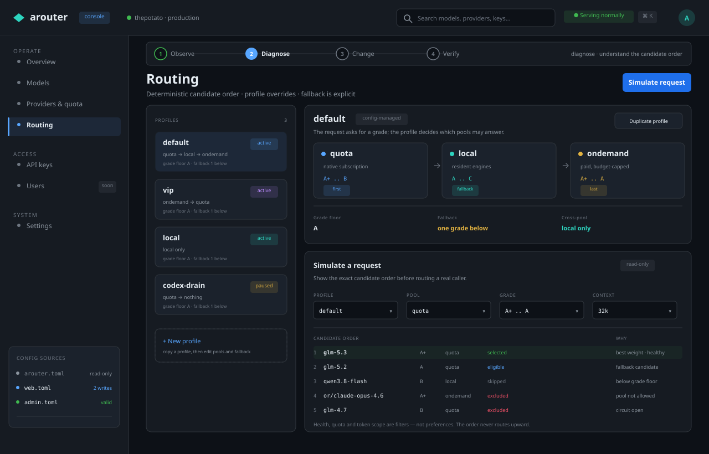
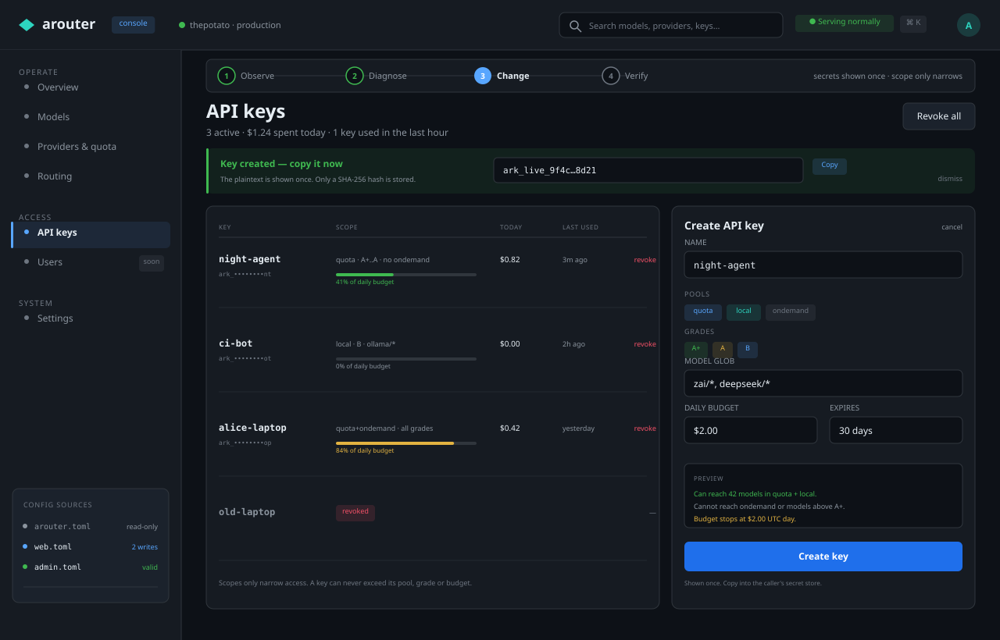
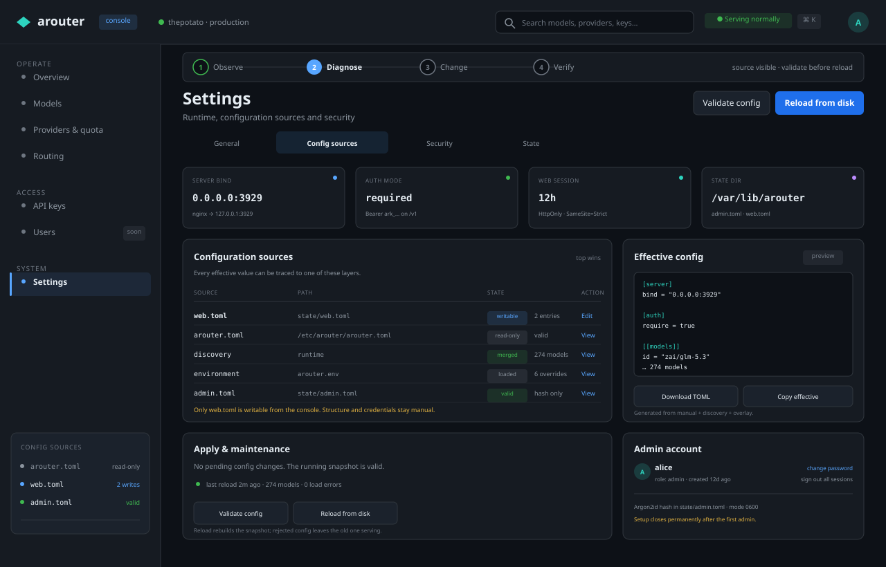
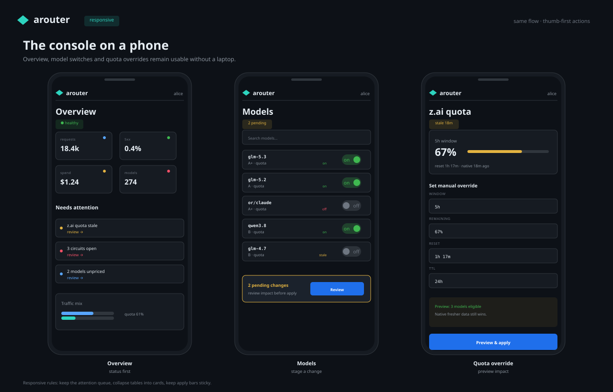

A configuration surface rather than a status page. The overview starts with what needs a decision; every change is staged, sourced and previewed before it is applied. Dashed items in the flow are planned UI, not current capability.









